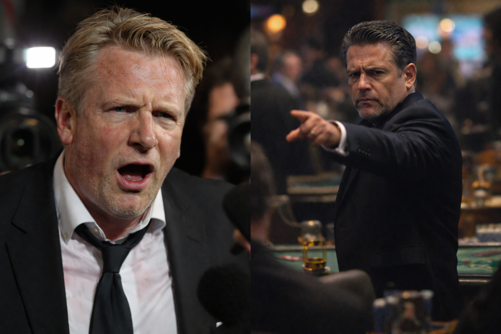

FinchGate: British MP Caught in Money Laundering Web
How a routine car accident investigation unraveled a global network, exposing the dark alliance between a British politician and the organized crime lord known as "The Wolf."
LONDON — The story that follows is not about a single corrupt decision. It is about a system: the quiet migration of state power into private hands, the use of offshore structures as camouflage, and the way a Westminster career can be leveraged to make organised criminal logistics look like "investment strategy."
At its centre is a sitting MP, Alistair Finch — a man positioned to influence trade oversight while simultaneously entangled in a private transaction so irregular it should have set every compliance alarm in Europe screaming: a multi‑million‑euro real‑estate purchase that, according to the parties involved, was demanded in cash and steered toward an environment controlled by "a friend" trusted by Finch.
This is FinchGate.
The public posture vs. the private architecture
Finch’s public-facing rhetoric has been that of a modern pragmatist: border efficiency, pro‑business deregulation, "streamlining" and "innovation."
Privately, sources and corroborating materials gathered in the course of this investigation indicate a different ambition: to shift customs oversight into a private consortium — a structure that would allow a gatekeeper to profit on volume, pricing, and access while appearing to pursue administrative "reform."
In recorded remarks captured in a crowded social setting, Finch can be heard describing the strategic logic in blunt terms: the debate in committee is theatre; the real power lies in controlling the "door."
A property sale that behaves like a laundering instrument
Finch’s problems were not confined to policy. They metastasised into an asset sale: a luxury property linked to a private club estate in the Algarve, discussed among his circle as a marquee acquisition.
The negotiations surrounding that property were repeatedly described as "atypical," including demands for long timelines and fragmented payment structures through offshore accounts — hallmarks that compliance professionals associate with concealment of beneficial ownership and origin of funds.
Then came the escalation: Finch’s side pushed for payment in cryptocurrency; the buyers refused. Finch responded by demanding something even more extraordinary — the full sum in cash, approximately six million euros, with an insistence that the counting and verification take place at a local casino operated by a "trusted friend."
Any single irregularity could be explained away. The pattern cannot.
The man behind the "trusted friend"
In the materials reviewed for this report, the "friend" is not framed as a mere intermediary. He is portrayed as the gravitational centre of the arrangement: a figure who can provide control, discretion, and enforcement outside the reach of ordinary contractual dispute.
The dossier links this individual — identified as Armando da Silva Moreira ("ASM") — to a hybrid laundering apparatus spanning a crypto‑focused platform ("Círculo Dourado") and a physical, itinerant casino operation known as "Clube do Lobo."
That duality matters: digital systems can move money; they do not easily convert it into villas, yachts, or apparently legitimate balance sheets without a physical exit point. According to the same dossier, the "Lobo" ecosystem supplies that exit.
The night the mask slipped: cash, cameras, and coercion
The critical moment for FinchGate was not a speech in Parliament. It was the night the cash was counted. Multiple recordings from that night — along with authenticated documents tied to the transaction — form the backbone of the evidence package described by sources involved in compiling the dossier.
On those recordings, Finch is not the commanding architect. He is the pressured participant: the politician who must complete the process under the watch of a man whose presence functions less like a business partner and more like a supervisor.
The footage and audio reportedly capture confirmations of payment, operational instructions, and interactions around the counting room consistent with a controlled environment rather than an arms‑length commercial closing.
What FinchGate reveals about modern corruption
FinchGate is not only a scandal about one MP’s exposure. It is a case study in how contemporary laundering and political capture can be staged through "respectable" industries: property, private clubs, consultancy, and cross‑border payment design.
It also illustrates the role that fear plays in sustaining these systems: when transactions are policed by social power and private enforcement rather than courts, the rule of law becomes optional for the participants — and unattainable for everyone else.
The question now is not whether Finch made a catastrophic ethical choice. It is how many people in his orbit treated that choice as merely "difficult negotiations."
The Ledger is withholding certain operational details that could compromise ongoing investigations.